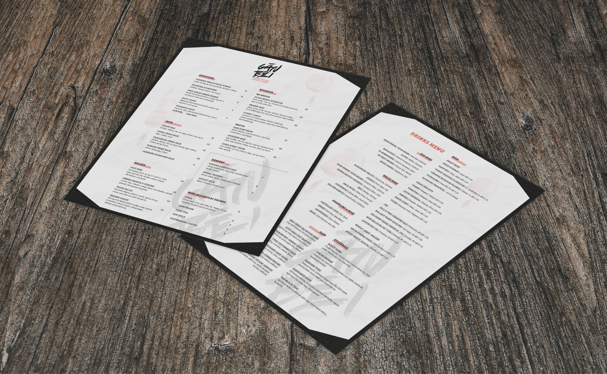
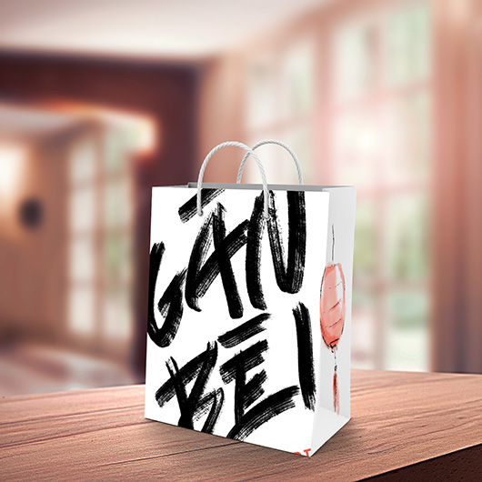
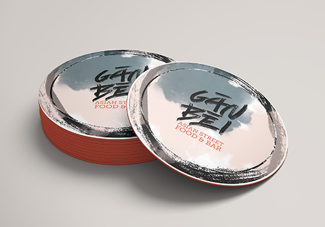
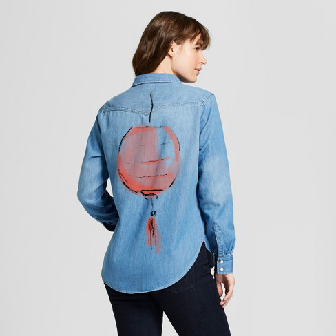
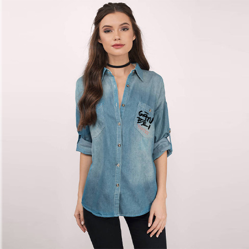
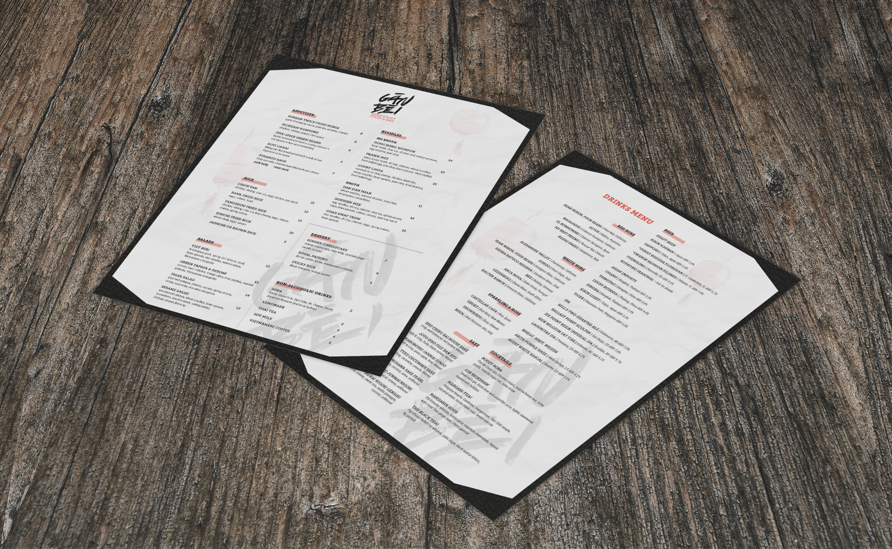
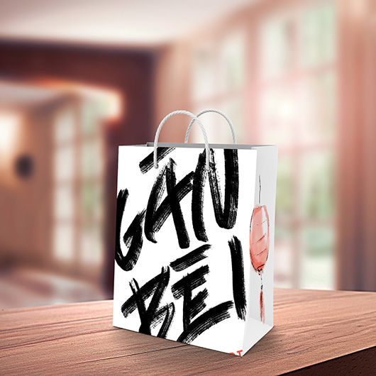
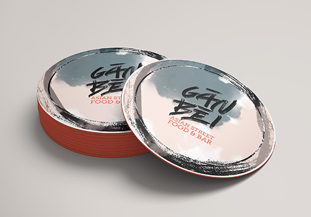
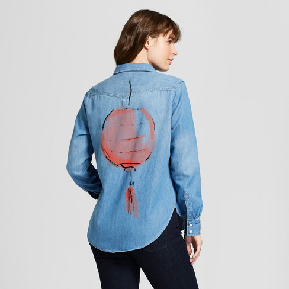
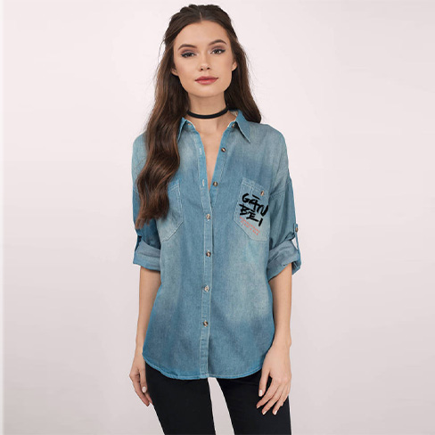

Branding
The Process
This is a branding project for a fictional Asian Street Food and Bar restaurant. The use of a grunge texture and brush strokes give off the night-life street food feel. The colors used help to emphasize the night-life idea and encourage hunger. The name “Gan Bei” came from three different languages, Chinese, Korean, and Japanese, all meaning “cheers!” though pronounced slightly different.


 








